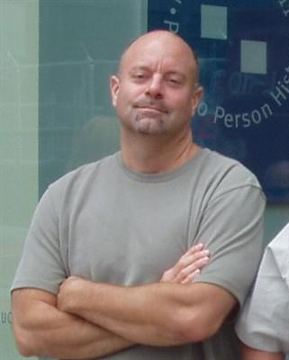
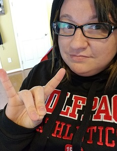

Meet Me There is a lightweight social application.
There's no account to create, and the events are removed from the database soon after ending.
Create or search for an event near you, and go meet new people.
This app is a collaborative effort for the purpose of a project for UNC Chapel Hill's Coding Bootcamp.
More?
In all things, there's always room for improvement, and this app is no exception.
The developers of this project have ideas for more functionality and fun, but due to time constraints and the lightning-fast pace of the Coding Bootcamp, the future plans for this app are shelved for the time being.
Here are some features that we would like to implement:
- RSVP button with headcount for each event
- Map display of the event location upon a button click
- Event-time fluidity across time zones
- Ability for the Greeter to upload a picture
- When mobile, allow the Greeter to take a selfie as opposed to uploading the photo
- Message board or chat capability
- Event rating, tagging, and saving
- Ability to add event to calendar
- A real database
Developers

Grey Arnold
Grey Arnold
Brint Hansen
Grady Knight

Ashley Moore
Ashley Moore